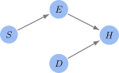

SCMs in Code#
Exercise, Stress, Diet and Health#
Recall we posit the following causal graph for how health is related to exercise, stress and diet.

Fig. 4 Causal Graph Example
In this example, we use synthetic data to demonstrate Causal Inference.
Loading Packages#
import numpy as np
import pandas as pd
import statsmodels.api as sm
import matplotlib
import matplotlib.pyplot as plt
from matplotlib import style
import seaborn as sns
style.use("fast")
matplotlib.rcParams['mathtext.fontset'] = 'stix'
matplotlib.rcParams['font.family'] = 'STIXGeneral'
# Set seed for reproducibility
np.random.seed(42)
Generating Synthetic Data#
To generate synthetic data, we use a linear relationship between each of the variables.
# Re-import libraries and regenerate the initial synthetic data with E as a binary variable
import numpy as np
import pandas as pd
import statsmodels.api as sm
# Seed for reproducibility
# Generate synthetic data
n = 1000 # Number of samples
S = np.random.normal(loc=20, scale=5, size=n) # Stress levels
D = np.random.uniform(low=0, high=10, size=n) # Diet quality
E = (np.random.uniform(0, 1, size=n) < (-0.6 - 0.04 * (S - 50))).astype(int) # Exercise: 1 for high, 0 for low, influenced by S
H = 2 + 0.5 * S - 0.6 * D + 5 * E + np.random.normal(loc=0, scale=1, size=n) # Health status
# DataFrame
df = pd.DataFrame({'Stress': S, 'Diet': D, 'Exercise': E, 'Health': H})
df.head()
| Stress | Diet | Exercise | Health | |
|---|---|---|---|---|
| 0 | 22.483571 | 1.674826 | 1 | 16.630190 |
| 1 | 19.308678 | 1.045678 | 1 | 16.238216 |
| 2 | 23.238443 | 6.364302 | 1 | 16.000719 |
| 3 | 27.615149 | 7.064757 | 0 | 11.076818 |
| 4 | 18.829233 | 0.315861 | 0 | 9.348547 |
Estimating a Causal Effect#
We seek to estimate the causal effect of Exercise (\(E\)) on Health (\(H\)). From previous arguments, we can compute this as:
In order to estimate this, we:
Posit a statistical model for the distributions involved in the computation. For this example, we require \(\text{Pr}(H | S, D, E)\), \(\text{Pr}(S)\) and \(\text{Pr}(D)\).
Fit the models to the data
Estimate the causal effect using the formula above. Since \(S\) and \(D\) are continuous here, we will use Monte-Carlo.
For \(\text{Pr}(H | S, D, E)\), we will use linear regression (here \(U_H\) is Gaussian noise):
For the other probabilities, we could posit a model. However, we will just use their true distributions.
Fit the model#
# Fit the linear regression model for Pr(H | S, D, E)
X = df[['Stress', 'Diet', 'Exercise']] # Independent variables
Y = df['Health'] # Dependent variable
X = sm.add_constant(X) # Add a constant term for the intercept
model = sm.OLS(Y, X).fit()
model.summary()
| Dep. Variable: | Health | R-squared: | 0.906 |
|---|---|---|---|
| Model: | OLS | Adj. R-squared: | 0.906 |
| Method: | Least Squares | F-statistic: | 3208. |
| Date: | Fri, 01 Mar 2024 | Prob (F-statistic): | 0.00 |
| Time: | 12:58:21 | Log-Likelihood: | -1444.9 |
| No. Observations: | 1000 | AIC: | 2898. |
| Df Residuals: | 996 | BIC: | 2917. |
| Df Model: | 3 | ||
| Covariance Type: | nonrobust |
| coef | std err | t | P>|t| | [0.025 | 0.975] | |
|---|---|---|---|---|---|---|
| const | 2.0133 | 0.182 | 11.042 | 0.000 | 1.655 | 2.371 |
| Stress | 0.4989 | 0.007 | 68.176 | 0.000 | 0.485 | 0.513 |
| Diet | -0.6043 | 0.011 | -53.518 | 0.000 | -0.626 | -0.582 |
| Exercise | 5.0623 | 0.073 | 69.198 | 0.000 | 4.919 | 5.206 |
| Omnibus: | 0.502 | Durbin-Watson: | 2.062 |
|---|---|---|---|
| Prob(Omnibus): | 0.778 | Jarque-Bera (JB): | 0.589 |
| Skew: | -0.012 | Prob(JB): | 0.745 |
| Kurtosis: | 2.884 | Cond. No. | 123. |
Notes:
[1] Standard Errors assume that the covariance matrix of the errors is correctly specified.
Monte-Carlo simulation#
Sampling \(H | \text{do}(E=high)\).#
Next, we will generate samples from \(H | \text{do}(E=high)\).
## Generate samples for S and D from their original distributions
n_mc = 10000 # Number of Monte Carlo samples
S_samples = np.random.normal(loc=20, scale=5, size=n_mc)
D_samples = np.random.uniform(low=0, high=10, size=n_mc)
## Perform Monte Carlo simulation to estimate Pr(H | do(E = high))
# Set E to high (1) for all samples in the Monte Carlo simulation
E_high = np.ones(n_mc)
# Prepare the data for prediction, including the constant term
X_mc = np.column_stack((np.ones(n_mc), S_samples, D_samples, E_high))
# Predict H using the corrected model and input structure
H_do_Ehigh = model.predict(X_mc)
average_H_do_Ehigh = np.mean(H_do_Ehigh)
print(average_H_do_Ehigh)
13.958740157717093
Visualisation#
plt.figure(figsize=(10, 6))
sns.histplot(H_do_Ehigh, bins=30, kde=True, color='blue')
plt.axvline(x=average_H_do_Ehigh, color='red', linestyle='--', label=f'Average Causal Effect: {average_H_do_Ehigh:.2f}')
plt.title('Distribution of Health Outcomes: $H \, | \, \\text{do}(E=high)$')
plt.xlabel('Health Outcome ($H$)')
plt.ylabel('Frequency')
plt.show()
Sampling \(H | \text{do}(E=low)\).#
## Generate samples for S and D from their original distributions
n_mc = 10000 # Number of Monte Carlo samples
S_samples = np.random.normal(loc=20, scale=5, size=n_mc)
D_samples = np.random.uniform(low=0, high=10, size=n_mc)
## Perform Monte Carlo simulation to estimate Pr(H | do(E = low))
# Set E to high (1) for all samples in the Monte Carlo simulation
E_low = np.zeros(n_mc)
# Prepare the data for prediction, including the constant term
X_mc = np.column_stack((np.ones(n_mc), S_samples, D_samples, E_low))
# Predict H using the corrected model and input structure
H_do_Elow = model.predict(X_mc)
average_H_do_Elow = np.mean(H_do_Elow)
print(average_H_do_Elow)
8.970451824496482
Visualisation#
plt.figure(figsize=(10, 6))
sns.histplot(H_do_Elow, bins=30, kde=True, color='blue')
plt.axvline(x=average_H_do_Elow, color='red', linestyle='--', label=f'Average Causal Effect: {average_H_do_Elow:.2f}')
plt.title('Distribution of Health Outcomes: $H \, | \, \\text{do}(E=low)$')
plt.xlabel('Health Outcome ($H$)')
plt.ylabel('Frequency')
plt.show()
Validating Faithfulness#
Sensitivity Analysis#
Using our ongoing example, we consider how sensitivity analysis can be used to verify faithfulness. We do this by first assuming an incorrect DAG and modify it. Our initial (incorrect) Causal Graph is:

Fig. 5 Incorrect Causal Model
n = 1000 # Number of samples
S = np.random.normal(loc=20, scale=5, size=n) # Stress levels
D = np.random.uniform(low=0, high=10, size=n) # Diet quality
E = (np.random.uniform(0, 1, size=n) < (-0.6 - 0.04 * (S - 50))).astype(int) # Exercise: 1 for high, 0 for low, influenced by S
H = 400 - 20 * S - 0.6 * D + 5 * E + np.random.normal(loc=0, scale=1, size=n) # Health status
# Creating the DataFrame
df = pd.DataFrame({'Stress': S, 'Diet': D, 'Exercise': E, 'Health': H})
# Fit the linear regression model for Pr(H | D, E)
X = df[['Diet', 'Exercise']] # Independent variables
Y = df['Health'] # Dependent variable
X = sm.add_constant(X) # Add a constant term for the intercept
model = sm.OLS(Y, X).fit()
print(model.summary())
# Perform Monte Carlo simulation to estimate Pr(H | do(E = high))
n_mc = 10000 # Number of Monte Carlo samples
S_samples = np.random.normal(loc=20, scale=5, size=n_mc)
D_samples = np.random.uniform(low=0, high=10, size=n_mc)
# Set E to high (1) for all samples in the Monte Carlo simulation
E_high = np.ones(n_mc)
# Prepare the data for prediction, including the constant term
X_mc_high = np.column_stack((np.ones(n_mc), D_samples, E_high))
# Predict H using the model and input structure for high exercise
H_do_Ehigh = model.predict(X_mc_high)
average_H_do_Ehigh = np.mean(H_do_Ehigh)
# Perform Monte Carlo simulation to estimate Pr(H | do(E = low))
# Set E to low (0) for all samples in the Monte Carlo simulation
E_low = np.zeros(n_mc)
# Prepare the data for prediction, including the constant term
X_mc_low = np.column_stack((np.ones(n_mc), D_samples, E_low))
# Predict H using the model and input structure for low exercise
H_do_Elow = model.predict(X_mc_low)
average_H_do_Elow = np.mean(H_do_Elow)
print(f"Average Health Outcome | do(E=high): {average_H_do_Ehigh}")
print(f"Average Health Outcome | do(E=low): {average_H_do_Elow}")
OLS Regression Results
==============================================================================
Dep. Variable: Health R-squared: 0.194
Model: OLS Adj. R-squared: 0.193
Method: Least Squares F-statistic: 120.3
Date: Fri, 01 Mar 2024 Prob (F-statistic): 1.57e-47
Time: 12:58:22 Log-Likelihood: -5928.2
No. Observations: 1000 AIC: 1.186e+04
Df Residuals: 997 BIC: 1.188e+04
Df Model: 2
Covariance Type: nonrobust
==============================================================================
coef std err t P>|t| [0.025 0.975]
------------------------------------------------------------------------------
const -56.7187 6.650 -8.529 0.000 -69.769 -43.669
Diet -0.6188 0.987 -0.627 0.531 -2.555 1.317
Exercise 90.9301 5.862 15.512 0.000 79.427 102.433
==============================================================================
Omnibus: 0.230 Durbin-Watson: 1.934
Prob(Omnibus): 0.892 Jarque-Bera (JB): 0.147
Skew: -0.016 Prob(JB): 0.929
Kurtosis: 3.049 Cond. No. 16.0
==============================================================================
Notes:
[1] Standard Errors assume that the covariance matrix of the errors is correctly specified.
Average Health Outcome | do(E=high): 31.109353089952936
Average Health Outcome | do(E=low): -59.82071749356533
# Creating the DataFrame
df = pd.DataFrame({'Stress': S, 'Diet': D, 'Exercise': E, 'Health': H})
# Fit the linear regression model for Pr(H | D, E)
X = df[['Stress', 'Diet', 'Exercise']] # Independent variables
Y = df['Health'] # Dependent variable
X = sm.add_constant(X) # Add a constant term for the intercept
model = sm.OLS(Y, X).fit()
# Prepare the data for prediction, including the constant term
X_mc_high = np.column_stack((np.ones(n_mc), S_samples, D_samples, E_high))
# Predict H using the model and input structure for high exercise
H_do_Ehigh = model.predict(X_mc_high)
average_H_do_Ehigh = np.mean(H_do_Ehigh)
# Perform Monte Carlo simulation to estimate Pr(H | do(E = low))
# Set E to low (0) for all samples in the Monte Carlo simulation
E_low = np.zeros(n_mc)
# Prepare the data for prediction, including the constant term
X_mc_low = np.column_stack((np.ones(n_mc), S_samples, D_samples, E_low))
# Predict H using the model and input structure for low exercise
H_do_Elow = model.predict(X_mc_low)
average_H_do_Elow = np.mean(H_do_Elow)
print(f"Average Health Outcome | do(E=high): {average_H_do_Ehigh}")
print(f"Average Health Outcome | do(E=low): {average_H_do_Elow}")
Average Health Outcome | do(E=high): 1.9124054359659097
Average Health Outcome | do(E=low): -3.1989195849881313